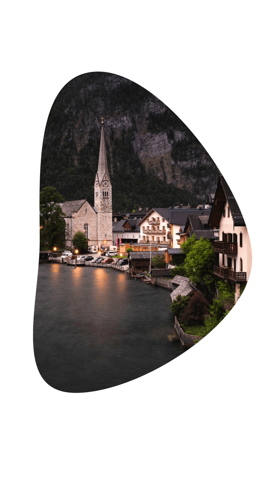

Крупнейшими городами являются Берн, Женева, Цюрих, Люцерн, Базель, Лозанна,
Лугано.
Официальное название страны – Швейцарская Конфедеерация
Государственные языки - французский, немецкий, итальянский, ретороманский.
Официальная валюта – это швейцарский франк.
Располагается государство в Западной Европе.
Столицей страны является город Берн.
Площадь территории составляет 41,3 тыс. кв. км.
Форма правления – федеративная республика
Население страны составляет около 7 млн. человек.
«Живой» символ Швейцарии - собака породы сенбернар
Часовой пояс UTC+1.
Он также контрастен как и природа. В Швейцарии встречаются и тропики, и Арктика. Роль
климатического барьера выполняют Альпы, они же и влияниют на климат. В северной и
центральной части из-за влияния Атлантики зимы суровые, а в южной части климат
солнечный, мягкий и средиземноморский. Значительными колебаниями отличается погода в
разных частях Альп. Частые дожди характерны для высокогорных областей. Солнечный и
сравнительно сухой преобладает в альпийских долинах. В общем, климат Швейцарии
умеренный. Для этой страны не свойственны крайние проявления холода, жары или влажности.
Температура в июле-августе составляет 18-27 оС, а в январе-феврале клеблется в пределах
от -1 до 5 оС. Местоположение над уровнем моря влияет на температуру.


К старинным обычаям в Швейцарии относятся очень бережно. Многие традиции носят местный
характер и существуют только в отдельных кантонах
Певчие конкурсы в Цюрихе или Базельский карнавал – это знаменитые фольклорные праздники.
Весной будет интересна поездка в Альпы, когда крестьяне перегоняют скот на пастбище. Это
заурядное событие превращается в маленький праздник. Бои коров в Нижнем Вале – главное
событие этого праздника. Жители католических кантонов отличаются приверженностью к
старинным обычаям
Народ в Швейцарии гостеприимный и дружелюбный. Буквально повсюду присутствуют порядок и
чистота. Швейцарцы уважают пунктуальность и доброжелательность, поэтому требуют то же и от
других. В стране ценят комфорт и удобство.
01
Это одна из самых маленьких стран в Европе.
02
Швейцария крупнейший производитель шоколада в мире
03
Швейцария - единственная страна после древних Афин, в которой практикуется прямая демократия
04
Швейцария признана одной из самых безопасных стран мира. Уровень преступности здесь
достигает всего 0,7% из расчета на 10 тысяч человек
05
Швейцарское законодательство очень строго защищает права животных. Пожалуй, среди
европейских стран здесь наиболее детально продуман закон о защите прав животных
06
По данным на 2015 год, Швейцария является рекордсменом по продолжительности жизни
07
Швейцарцы поглощают больше всего шоколада в мире - на одного человека приходится около 11 кг
в год
08
В Швейцарии больше банков, чем стоматологических клиник. Стабильная экономика этого
государства известна во всем мире
09
Эта страна прославилась по всему миру благодаря часовому мастерству. Бренды класса люкс
производят именно здесь, например, Rolex и Tissot.